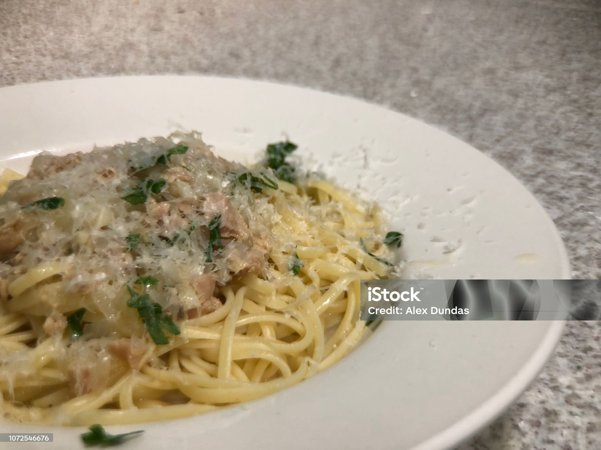

Home
Linguine With White Clam Sauce

Description
A white clam sauce flavored with garlic, white wine, and herbs is served with linguine noodles for a delicious seafood dish!
Ingredients
- 1 (12 oz) package linguine pasta
- 1/4 cup olive oil
- 1 clove garlic, minced
- 3 (8 oz) cans minced clams, with juice
- 3/4 cup chopped parsley
- 2 tbs white wine
- 1 tsp dried basil
- 1/2 tsp salt
Steps
- Bring a large pot of lightly salted water to a boil. Cook linguine at a boil until tender yet firm to the bite, about 10 minutes.
- Meanwhile, heat olive oil in a large skillet over medium heat. Add garlic; cook and stir until fragrant, about 1 minute. Stir in liquid from clams, parsley, white wine, basil, and salt; simmer for 10 minutes.
- Stir in clams until heated through. Add cooked linguine pasta; toss to combine and serve warm.